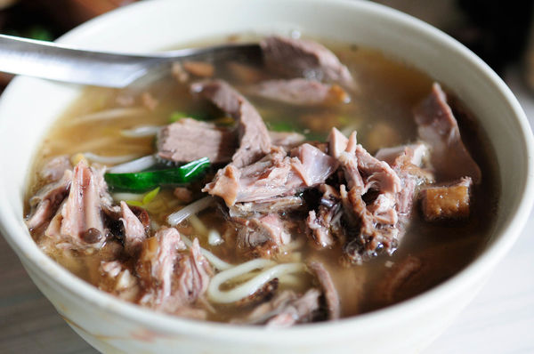
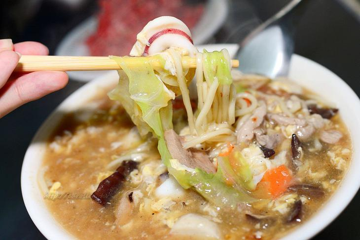

地點：台南市南區灣裡路404號 電話：06-2622567
九母魚酥，是一種很多刺的魚，在吃的時候可以吃到她細細小小的刺但是不會被刺傷，且海鮮味十足，可以外帶回去慢慢享用。 而綜合焿內有虱目魚皮、大腸皮、魚酥、魚丸一次可以吃到所有店裡的招牌，非常美味。
×地點：702台南市南區灣裡路341號 電話：06-262-5749
當歸鴨麵線吃起來當歸味十足，鴨肉也很好吃，煮得夠軟，而米糕，比較不偏台南味，比較不甜，偏鹹，但是飯煮夠嫩軟，好吃，淋上的滷肉也滷得夠味。
 ×地點：702台南市南區灣裡路254號 電話：06-262-2612
在灣裡很有名的一家雞排攤，有炸雞翅、炸雞排、炸魷魚等，雞排的肉還算多，要趁熱吃才好吃，冷掉的話就不好吃了，且價格實惠。
 ×
×
地點：灣裡路282巷南區台南市702號 電話：06-262-2682
品項眾多的特色麵店，傳承三代的傳統滋味。招牌的番茄炒飯特別採用口味偏甜的傳統口味番茄醬，顏色鮮豔，香氣十足。
 ×
Your couch. It is mine.
I'm a cool paragraph that lives inside of an even cooler modal. Wins!
 ×
×